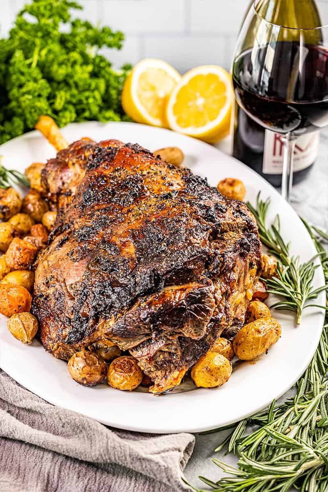

Roasted leg of Lamb

Quick and Easy Roasted Leg of Lamb
Roasted Leg of Lamb is flavored with zippy lemon juice, fresh garlic, rosemary,
and is topped with a sauce made from its own pan drippings and herbs. This is the best way to enjoy roast lamb!
Roasted Leg of Lamb is flavored with zippy lemon juice, fresh garlic, rosemary, and is topped with a sauce made
from its own pan drippings and herbs. This is the best way to enjoy roast lamb!
Ingredients
Lamb
- 6 pounds leg of lamb
- 1/4 cup lemon juice freshly squeezed
- 8 cloves minced garlic minced
- 3 tablespoons minced fresh rosemary
- 1 tablespoon salt
- 2 teaspoons black pepper
Sauce
- Pan drippings
- 1 white onion diced
- 1/3 cup minced fresh rosemary
- 1/3 cup minced chives
- 1/3 cup minced fresh parsley
- 1 tablespoon all-purpose flour
- 2 cups chicken stock
- 1 cup red wine or red grape juice
Steps